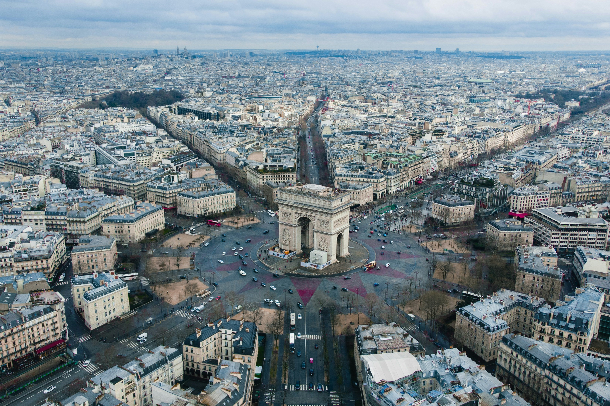
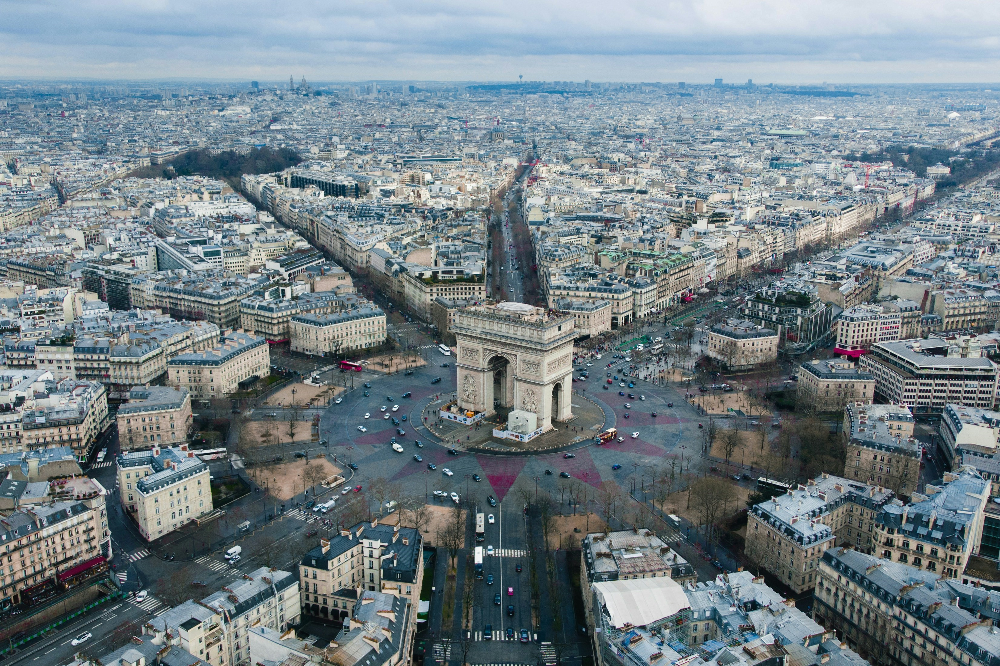

MY TOP 4 PLACE I WANT TO VISIT IS PARIS

 

I really want to visit Paris because it looks so pretty in pictures. There's the Eiffel Tower, which is super famous, and the Louvre Museum with its cool art. Paris also has nice parks like Luxembourg Gardens and beautiful streets with cute cafes. I imagine walking around Paris, seeing all the historic buildings and trying French pastries like croissants and macarons. And maybe taking a boat ride on the Seine River to see more of the city. Paris seems like a magical place with lots of things to see and do.
Back